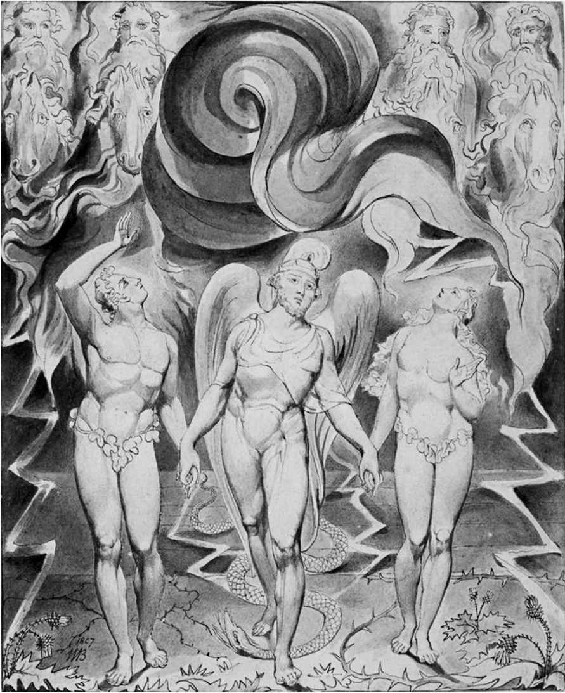

维尼和他的朋友们并不知道克里斯托弗·罗宾要去哪里，不过我们很清楚。虽然文中并未明确指出，但他要去的地方肯定是寄宿学校。我们关于英格兰文学的介绍，第二阶段要说的就是求学故事。这必然涉及英格兰难以回避的阶级问题。穷人的教育是一回事（或者根本没有），富人的教育则是另一回事。贫穷的简·爱在冷冰冰的洛伍德学校饱受折磨，遭遗弃的男孩则被送往多西伯义斯学堂，任凭沃克弗德·斯奎尔斯先生摆布（《尼古拉斯·尼克贝》，1839），更不要说狄更斯的前一部作品《雾都孤儿》（1838）中的济贫院：这些地方和托马斯·休斯在《汤姆·布朗的求学时代》（1857）中提及的英格兰公立学校的氛围完全不同。在所有的学堂中，食物都很糟糕，但是上流社会的男孩被允许使用调味酱和泡菜。多亏了拉格比公学的校长托马斯·阿诺德博士，学校里的恶霸弗拉士曼被打败了，汤姆成长为一名绅士，同时也成为身体强健的基督徒。白天，他驰骋板球赛场；晚上，他依然记得做祷告。
一个来自体面但并不富裕的中产阶级家庭的男孩，在接受了公立学校的教育之后成为统治阶级的一员，并且接受相应的价值观；与此同时，他在成长的道路上还要战胜一个来自上层阶级的恶霸同学。在面向中产阶级读者的一系列小说中，这样的人物设定已经成为固定的套路。男主角总会有一两个好朋友帮助他，比如汤姆的朋友亚瑟，以及哈利·波特的朋友罗恩和赫敏。
在学校放假期间，公立学校的精神可以在野营、划船和登山等运动中加以历练。亚瑟·兰塞姆的《燕子号和亚马逊号》（1930）就反映出这一点，这本书很有代表性地描述了健康的英格兰特性。作者亚瑟·兰塞姆娶了托洛茨基的秘书，并且一度支持布尔什维克运动。在这本书中，一群典型的英格兰中产阶级的孩子经受住极端情况的考验，表现出坚韧不拔的品格。在C.S.刘易斯的《狮子、女巫和魔衣橱》（1950）中，佩文西家的孩子们为了躲避闪电战而撤离伦敦，却发现自己被卷入另一场战斗，对手是幻想版的纳粹/恶魔军队。在R.M.巴兰坦的《珊瑚岛》（1857）中，两个孩子拉尔夫和杰克遭遇海难，在没有成人陪同的情况下来到波利尼西亚岛的一座珊瑚礁上，他们在那里上演了一出好戏。

图1 “驱逐”：左图是威廉· 布莱克为约翰· 弥尔顿《失乐园》的结尾部分绘制的插图，右图是欧内斯特· H.谢泼德为《维尼角的房子》的结尾部分绘制的插图。
在继承传统的同时，文学创作也在颠覆传统。在威廉·戈尔丁的《蝇王》（1954）中，拉尔夫和杰克在流落荒岛时并没有展现出绅士风范，而是变成了野蛮人。同样，C.S.刘易斯在纳尼亚系列小说中所采用的基督教隐喻与他在《〈失乐园〉序言》（1942）中对于弥尔顿的正统解读保持一致，而菲利普·普尔曼的《黑暗物质》三部曲（1995-2000）却恰好相反，对《失乐园》做出了非正统解读，并以威廉·布莱克在《天堂与地狱的婚姻》（1793）中的话作为开头：“弥尔顿是个真正的诗人，他与群魔为伍却浑然不觉。”“黑暗物质”这一说法出自《失乐园》，暗指撒旦穿越混沌，从一个世界来到另一个世界的旅程。普尔曼作品中的女主角名叫莱拉，这同样让人联想到布莱克的作品（莱拉是《天真之歌》中那个“迷失的小女孩”）。“守护神”这个说法是对布莱克的另一处引用，我们每个人都有自己的守护神，它既是我们性格的化身，又是我们的守护精灵。